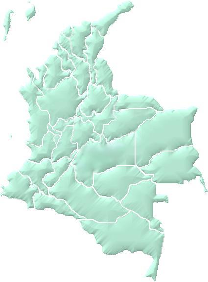

|
 |
Estadísticas.
Varios voluntarios de SLEC mantienen estadísticas sobre el uso de software de libre redistribución en instituciones educativas colombianas.
Estos son algunos colegios que usan software de libre redistribución en el país:
En Bogotá, el Gimnasio Fidel Cano.
En Barranquilla, el Colegio Cristiano J. Vender Murphy.
En Neiva, el Colegio Adventista de Neiva.
En Ocaña, el Don Bosco College.
En Pasto, el Colegio San Francisco Javier.
